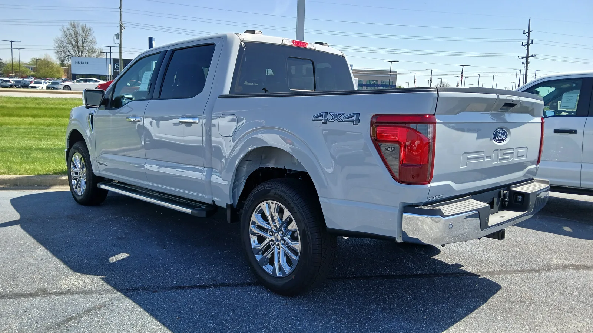
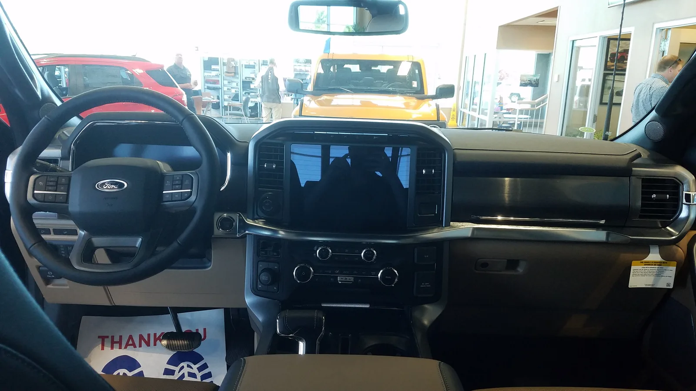

▲ 포드 F-150 14세대 XLT 트림. 이번 리콜은 2023년 1월~2026년 8월 사이 생산된 2023~2027년형 F-150이 대상이다 ⓒ Deathpallie325, Wikimedia Commons (CC BY-SA 4.0)
포드가 판매한 F-150 픽업트럭 22만 대 이상에서, 연료탱크를 프레임에 고정하는 스트랩이 처음부터 제대로 체결되지 않은 채 출고됐을 가능성이 확인됐다. 최악의 경우 운전 중 연료탱크가 통째로 떨어져 나가 뒤따르는 차량에 도로 위 장애물이 될 수 있고, 연료가 새어 나오면 화재로 이어질 위험도 있다.
1. 무슨 일이 있었나 — NHTSA 캠페인 26V578
포드는 지난 9월 1일 자체 필드 리뷰 위원회(Field Review Committee)를 통해 이번 리콜을 승인했고, 미국 도로교통안전국(NHTSA)에 캠페인 번호 26V578000(포드 내부 번호 26S69)으로 등록했다. 대상 차량 VIN은 9월 14일부터 NHTSA 홈페이지에서 조회할 수 있게 됐고, 오너에게 발송하는 통보 우편은 9월 21일부터 순차적으로 시작된다.
| 항목 | 내용 |
|---|---|
| NHTSA 캠페인 번호 | 26V578000 |
| 포드 내부 리콜 번호 | 26S69 |
| 대상 차종 | 포드 F-150(2023~2027년형) |
| 대상 대수 | 22만 3,472대 |
| 생산 기간 | 2023년 1월 4일 ~ 2026년 8월 27일 |
| 결함 부위 | 프런트 연료탱크 마운팅 스트랩 |
| 딜러 통보 | 2026년 9월 14일부터 VIN 조회 가능 |
| 오너 통보 | 2026년 9월 21일부터 순차 발송 |
대상 VIN 여부는 NHTSA 리콜 조회 페이지 또는 포드 공식 사이트에서 17자리 차대번호(VIN)를 입력해 확인할 수 있다. NHTSA 리콜 보고서 바로가기

▲ F-150 후면부. 연료탱크는 차체 하단, 프레임 레일 사이에 스트랩으로 고정된다 ⓒ Deathpallie325, Wikimedia Commons (CC BY-SA 4.0)
2. 결함 원인 — 조립 라인 "검증 카메라"가 꺼져 있었다
이번 리콜은 부품 자체의 결함이 아니라 '조립 불량'에서 비롯됐다. 포드에 따르면 일부 F-150은 프런트 연료탱크 스트랩의 T-슬롯(T-slot)이 차체 프레임 레일에 완전히 삽입되지 않은 채 조립됐다. 정상적인 공정이라면 조립 라인에 설치된 카메라 기반 시스템이 스트랩이 제대로 체결됐는지 자동으로 확인해야 하는데, 해당 카메라 검증 시스템이 일부 생산 기간 동안 지속적으로 작동하지 않았던 것으로 조사됐다.
📍 부품 결함이 아니라 '공정' 결함
스트랩 자체는 정상 부품이다. 문제는 이를 프레임에 끝까지 밀어넣어 고정하는 조립 단계에서, 체결 여부를 검증하는 자동화 카메라가 일부 시점에 제 역할을 하지 못했다는 점이다. 그 결과 실제로는 헐겁게 걸쳐 있거나 미체결 상태인 스트랩이 검수를 통과해 출고된 차량이 섞여 있게 됐다.
포드는 8월 27일 기준으로 진행한 글로벌 워런티 데이터 검토에서 이 결함과 연관된 클레임 16건을 확인했다고 밝혔다. 다만 이와 관련한 사고나 부상 사례는 아직 보고되지 않았다고 설명했다. 결함은 차량이 아직 딜러에 있을 때, 혹은 오너가 인수한 지 3개월 이내와 같은 초기 단계에서 나타나는 경향이 있는 것으로 파악됐다.
3. 왜 위험한가 — 도로 위 장애물부터 화재까지
연료탱크 마운팅 결함이 방치될 경우 나타날 수 있는 위험은 크게 세 갈래다.
| 상황 | 결과 |
|---|---|
| 주행 중 스트랩이 완전히 풀림 | 연료탱크가 차체에서 이탈, 도로 위 낙하물로 후행 차량에 위협 |
| 연료탱크 흔들림·마찰로 연료라인 손상 | 연료 누출로 인한 엔진 시동 꺼짐(주행 중 동력 상실) |
| 누출된 연료·연료 증기가 배기계 등 점화원에 노출 | 화재 위험 |
포드는 이번 리콜 건과 관련해 아직 사고·부상 보고는 없다고 밝혔지만, 위 세 가지 시나리오 모두 잠재적으로 중대한 안전 문제로 이어질 수 있다는 점에서 리콜이 신속하게 진행되는 배경이 됐다.

▲ F-150 실내. 이번 리콜은 실내 사양과는 무관하며, 차체 하단 연료탱크 마운팅 구조에 한정된 문제다 ⓒ deathpallie325, Wikimedia Commons (CC BY-SA 4.0)
4. 조치 방법과 오너 통보 일정
리콜 대상으로 확인된 차량은 포드 공식 딜러에서 무료로 점검받을 수 있다. 딜러는 프런트 연료탱크 스트랩 체결 상태를 점검한 뒤, 손상이 없으면 프레임 레일에 다시 제대로 고정하고, 손상이 발견되면 프런트(필요시 리어까지) 스트랩을 새 부품으로 교체한다. 모든 과정은 비용 없이 진행된다.
✅ 오너가 지금 할 수 있는 것
· NHTSA 리콜 조회 페이지 또는 포드 공식 사이트에서 VIN(차대번호)으로 대상 여부 확인
· 포드 고객센터(1-866-436-7332)에 리콜 번호 26S69를 언급하며 문의
· 딜러 통보는 9월 14일부터, 오너 통보 우편은 9월 21일부터 순차 발송 예정이므로 우편을 받기 전이라도 VIN 조회로 선제 확인 가능
· 대상 차량이라면 딜러 예약 후 무상 점검·수리 진행
참고로 이 시기 크라이슬러·지프 계열에서도 별도의 리콜이 진행되고 있지만, 이는 F-150 연료탱크 결함과는 완전히 별개의 사안이다. 두 리콜을 혼동하지 않도록 유의할 필요가 있다.
▲ F-150 트레모어 트림의 전측면. 연료탱크는 적재함 아래, 좌우 프레임 레일 사이 공간에 스트랩으로 매달려 고정된다 ⓒ Elise240SX, Wikimedia Commons (CC BY-SA 4.0)
5. 과거에도 있었다 — 2011년 F-150 연료탱크 스트랩 리콜
포드가 F-150의 연료탱크 스트랩 문제로 대규모 리콜을 실시한 것은 이번이 처음이 아니다. 2011년 8월, 포드는 1997~2004년형 F-150과 1997~1999년형 F-250(8,500파운드 이하), 2002~2003년형 링컨 블랙우드까지 포함해 북미 전역 122만 대(미국 내 약 110만 대)를 리콜한 바 있다. 당시 결함은 제설용 염화물 등에 장기간 노출된 연료탱크 스트랩이 부식돼 끊어지는 문제였고, 이로 인한 화재 3건과 부상 1건이 보고됐다.
또한 2022년에는 단 1대의 2021년형 F-150이 "연료탱크 프런트 마운트 없이 조립돼 스트랩이 고정되지 않은 상태"로 출고된 사실이 확인되며 개별 리콜(포드 내부 번호 22S42)이 진행된 적도 있다. 규모는 작았지만, 연료탱크 프런트 마운팅 불량이라는 결함의 패턴 자체는 이번 리콜과 유사하다는 점에서 눈에 띈다.
| 시점 | 대상 | 규모 | 원인 |
|---|---|---|---|
| 2011년 8월 | 1997~2004년형 F-150 등 | 약 122만 대 | 연료탱크 스트랩 부식·파단 |
| 2022년(등록) | 2021년형 F-150 | 1대 | 연료탱크 프런트 마운트 조립 누락 |
| 2026년 9월 | 2023~2027년형 F-150 | 22만 3,472대 | 조립 공정 카메라 검증 미작동으로 프런트 스트랩 미체결 |
▲ 포드 F-150 XL 트림 슈퍼크루. 이번 사진은 리콜 대상 차량이 아닌 동일 세대(14세대) F-150의 예시 이미지다 ⓒ Kevauto, Wikimedia Commons (CC BY-SA 4.0)
즉 연료탱크를 프레임에 붙잡아 두는 스트랩은 F-150에서 반복적으로 리콜 이슈가 됐던 부위다. 다만 원인은 매번 달랐다. 2011년은 부식으로 인한 스트랩 파손이었고, 이번에는 애초에 조립 단계에서 체결 자체가 제대로 되지 않은 채 검수를 통과한 것이 문제였다.
6. 요약
포드가 2023~2027년형 F-150 픽업트럭 22만 3,472대를 대상으로 연료탱크 마운팅 결함 리콜에 나섰다. 조립 공정에서 프런트 연료탱크 스트랩의 체결 상태를 확인하는 카메라 검증 시스템이 일부 기간 작동하지 않아, 스트랩이 제대로 고정되지 않은 채 출고된 차량이 섞여 있었던 것이 원인이다.
방치하면 주행 중 연료탱크 이탈, 연료 누출로 인한 시동 꺼짐, 화재로까지 이어질 수 있는 만큼 포드는 이번 결함을 안전 관련 사안으로 분류했다. 다행히 현재까지 사고나 부상 보고는 없으며, 확인된 워런티 클레임은 16건이다. 딜러 통보는 9월 14일, 오너 통보 우편은 9월 21일부터 시작되며 모든 점검·수리는 무료로 진행된다.
대상 여부가 궁금한 F-150 오너라면 NHTSA 리콜 캠페인 26V578(포드 내부 번호 26S69) 기준으로 VIN을 조회해 확인하는 것이 가장 정확하다. 같은 시기 진행 중인 크라이슬러·지프 계열 리콜은 이번 건과 전혀 다른 사안이므로 혼동하지 않도록 주의가 필요하다.